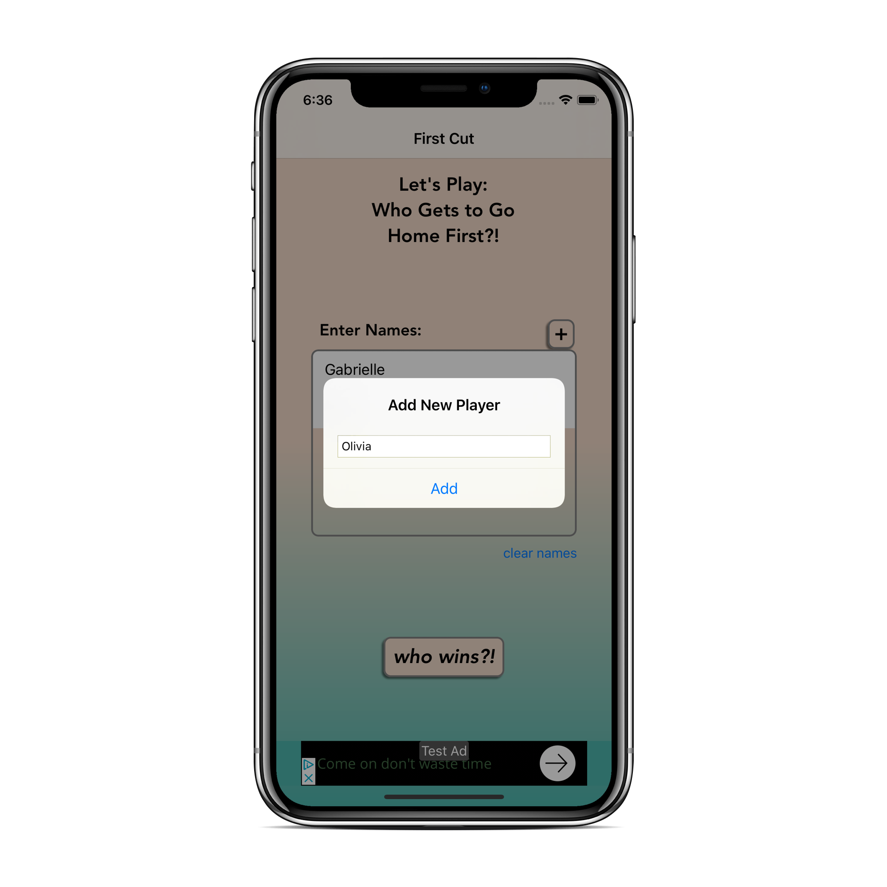
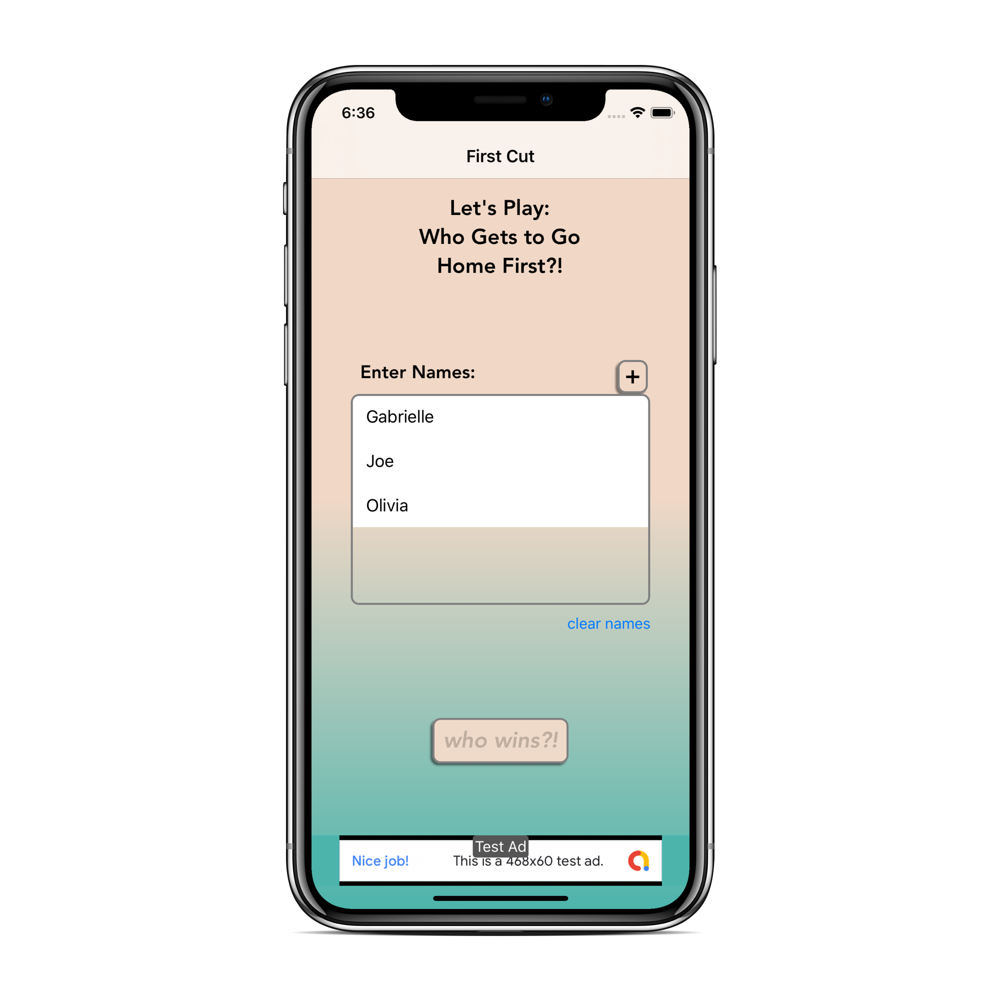
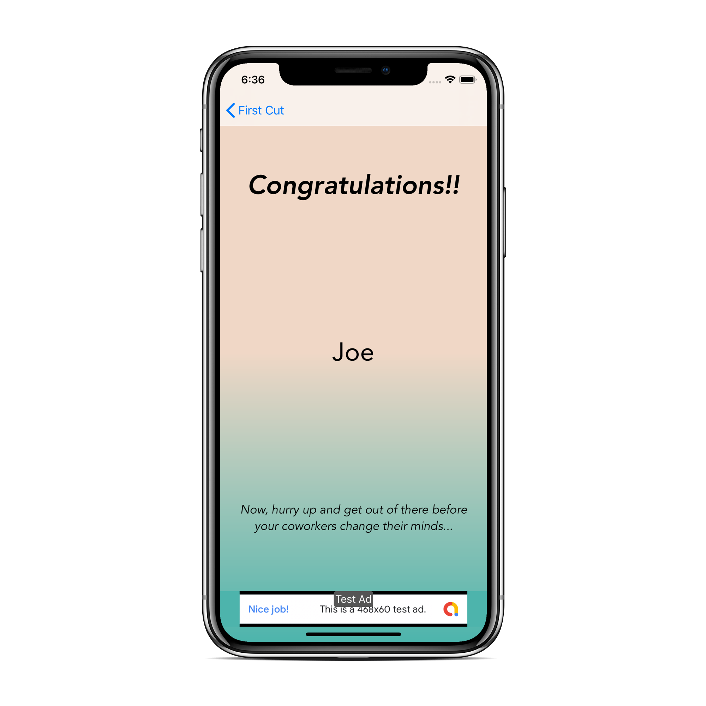

The cloth was clean, the service shone; there were three kinds of well-baked bread, two bottles of wine, two of excellent mead, and a large glass jug of kvas -- both the latter made in the monastery, and famous in the neigborhood. There was no vodka. Rakitin related afterwards that there were five dishes: fish-suop made of sterlets, served with little fish paties; then boiled fish served in a spesial way; then salmon cutlets, ice pudding and compote, and finally, blanc-mange. Rakitin found out about all these good things.
The cloth was clean, the service shone; there were three kinds of well-baked bread, two bottles of wine, two of excellent mead, and a large glass jug of kvas -- both the latter made in the monastery, and famous in the neigborhood. There was no vodka. Rakitin related afterwards that there were five dishes: fish-suop made of sterlets, served with little fish paties; then boiled fish served in a spesial way; then salmon cutlets, ice pudding and compote, and finally, blanc-mange. Rakitin.
The cloth was clean, the service shone; there were three kinds of well-baked bread, two bottles of wine, two of excellent mead, and a large glass jug of kvas -- both the latter made in the monastery, and famous in the neigborhood. There was no vodka. Rakitin related afterwards that there were five dishes: fish-suop made of sterlets, served with little fish paties; then boiled fish served in a spesial way; then salmon cutlets, ice pudding and compote, and finally, blanc-mange.
The cloth was clean, the service shone; there were three kinds of well-baked bread, two bottles of wine, two of excellent mead, and a large glass jug of kvas -- both the latter made in the monastery, and famous in the neigborhood. There was no vodka. Rakitin related afterwards that there were five dishes: fish-suop made of sterlets, served with little fish paties; then boiled fish served in a spesial way; then salmon cutlets, ice pudding and compote, and finally, blanc-mange. Rakitin found out about all these good things, for he could not resist peeping into the kitchen, where he already had a footing. He had a footting everywhere, and got informaiton about everything. He was of an uneasy and envious temper. He was well aware of his own considerable abilities, and nervously exaggerated them in his self-conceit. He knew he would play a prominant part of some sort, but Alyosha, who was attached to him.